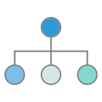
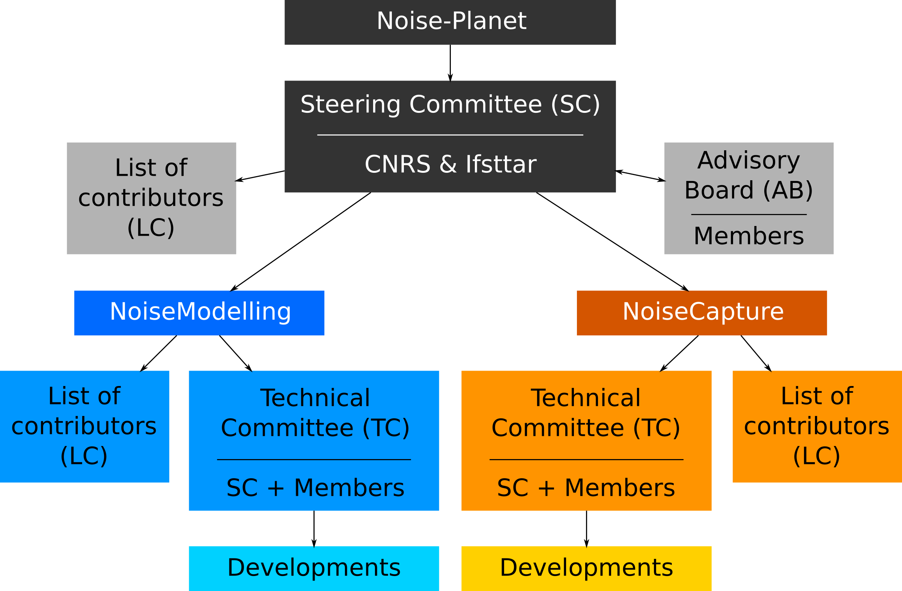

 Organization
This page presents the governance of the Noise-Planet project as a whole.
Steering Committee | Advisory Board | Technical Committee | List of Contributors | Commitment of Members | Instances composition
Foundations
History
Noise-Planet is a platform bringing together the results of research collaborations carried out by acousticians from Université Gustave Eiffel (formerly Ifsttar) and geographers-geomaticians from CNRS on the issue of environmental noise assessment. This collaboration has made it possible to implement IT tools, combining "geomatics" and "acoustics", freely distributed in Open Source to different communities.
Objectives
The objective of the Noise-Planet project (subsequently simply "Noise-Planet" or "Project") is to develop, disseminate and promote free scientific tools for the assessment of environmental noise, at the interface between acoustics and geographic information science, within the framework of Open Science (Open Source, Open Data, Open standard, ...).
These tools are intended for a large community, both public and private, and in particular:
- academic world (teachers and students),
- researchers (public or private),
- professional community of environmental acousticians.
General operating principle
The Noise-Planet project is managed by a Steering Committee, which can rely on an Advisory Board and Technical Committees.
These bodies, whose lists of Members are public, are composed of individual or institutional, voluntary Members who contribute, at different levels, to the development and/or enhancement of the Project. By participating in the Noise-Planet project, a Member commits itself.
Individual or institutional Contributors may also, at their own initiative, participate in the project, without being a Member, using the development resources made available to them by the Project. All Contributors are listed in a public List of Contributors.

Noise-Planet components
Noise-Planet currently consists of the following components:
NoiseCapture
a smartphone application to measure and share the users' sound environment
NoiseModelling
a GIS plugin to produce noise maps (formerly "NoiseM@p")
OnoMap
a Spatial Data Infrastructure (SDI) dedicated to noise data.
Foundations | Advisory Board | Technical Committee | List of Contributors | Commitment of Members | Instances composition
Steering Committee (SC)
Missions
The Steering Committee ("SC") is the steering body of Noise-Planet. Its missions are as follows:
- The SC ensures the complete management of the components, projects and instances of Noise-Planet.
- The SC examines applications for membership, renewal and exclusion of members from the Noise-Planet bodies.
- The SC examines requests for contributions from Contributors to the Project.
- The SC manages all the tools and platforms necessary for the management of the Project, as well as for the development and dissemination of the Components.
- The SC ensures that there is no conflict of interest or, where applicable, addresses any conflict of interest that may arise within the Project.
Composition
When the Noise-Planet project was created, the SC was composed of:
- two co-Presidents (Université Gustave Eiffel (formerly Ifsttar) & CNRS),
- a Vice President in charge of IT developments,
- a Vice-President in charge of communication.
The co-Presidents, each representing a founding organization of Noise-Planet:
- ensure a collegial management of the Project,
- undertake to respect the interests of their respective home organizations,
- undertake to ensure all useful communication with their respective home organization.
All SC Members undertake to respect the common rules for a Member's engagement in the project.
How it works
- The SC meets regularly, either physically or through remote communication tools, at least once a year.
- Meetings are organized at the request of one of the SC Members.
- The meetings are facilitated by one of the co-President.
- Decisions are taken by a three-quarters majority of the Members.
- Members concerned by the said discussion in the event of any conflict of interest shall be excluded from discussions on decisions.
- Each SC meeting is reported.
Life expectancy & Dissolution
- The co-Presidents may by mutual agreement terminate the Noise-Planet project, and consequently, the SC.
- In the event of a serious disagreement between the co-Presidents, and provided that the conflict cannot be resolved by an ad hoc body, the Project shall be dissolved.
- In the event of dissolution of the Project, the bodies of the co-Presidents agree on a distribution of the Common Properties.
Renewal of the SC
The SC is intended to exist and function as long as the Noise-Planet project exists. It is tacitly renewed on 1 January of each year.
Entry of a new Member
The SC may propose to integrate a new Member.
Removal of a member
Upon written request to the SC, a Member (or its parent body) may unilaterally request its withdrawal from the SC. The outgoing Party may:
- transfer the entirety of its Property to another Member providing co-Direction (resulting in a change in the composition of the SC),
- transfer the management of its Property to another Member providing co-Direction (resulting in a change in the composition of the SC),
- propose to another body to become a Member of the SC and appoint a new co-Director to represent it in the SC (resulting in a change in the composition of the SC).
The choice of one of these options must be validated by the other co-Presidents.
Conflict management
In the event of conflicts between the co-Presidents that cannot be resolved within the SC, the General Directorates of the respective bodies of the co-Presidents are requested. By mutual agreement, they set up a body to help resolve the conflict.
Foundations | Steering Committee | Technical Committee | List of Contributors | Commitment of Members | Instances composition
Advisory Board (AB)
Missions
The Advisory Board ("AB") is a consultative body of Noise-Planet. Its missions are as follows:
- The AB assists the SC in decision-making requiring technical or scientific expertise, at the request of the SC.
- The AB may submit proposals to the SC for the development of the Project
The opinions and proposals formulated by the AB are for advisory purposes only. The SC may therefore disregard this.
Composition
Members of the AB are public or private organizations or any natural person providing a substantial level of support (financial or other) to the Noise-Planet project. The evaluation of the level of support (whether or not it allows integration into the AB) is carried out by the SC, based on its own criteria.
- Each AB Member organisation appoints a single representative.
- A Member's participation in the AB is free of charge.
How it works
- The AB appoints a facilitator from among its Members.
- The AB meets at least once a year at the request of one of its Members or the facilitator.
- A joint AB and SC meeting is held at least once a year.
- Each AB meeting is reported to the SC.
Life expectancy & Dissolution
The AB ends with the dissolution of the Noise-Planet project.
Renewal of the AB
The AB is tacitly renewed on 1 January of each year.
Entry of a new Member
A Party wishing to join the AB must make a written request to the SC. The decision to integrate a new Member is taken by the SC, with an advisory opinion from the AB.
Removal of a member
- An AB Member may unilaterally decide to withdraw.
- When the support of a Member is no longer effective, the SC may decide to withdraw the Member concerned, after consulting the other Members of the AB.
- The AB (by a majority of the members of the AB, advisory opinion to be validated by the SC) or the SC may request the withdrawal of a Member if the behaviour of the Member in question is contrary to the philosophy of Noise-Planet.
Conflict management
In the event of a conflict between AB Members that cannot be resolved within the AB, the SC shall set up a body to assist in the resolution of the conflict.
Foundations | Steering Committee | Advisory Board | List of Contributors | Commitment of Members | Instances composition
Technical Committee (TC)
Missions
The Technical Committee ("TC") is a body that ensures the coherent development of each component of Noise-Planet.
The scope of its missions is reduced to a particular component:
- The TC defines the Roadmap of the component.
- The TC organizes the developments in accordance with the Roadmap.
Composition
The TC is composed of:
- The SC,
- Members, public or private organizations or any natural person providing a substantial level of support (financial or other) to the Noise-Planet project. The evaluation of the level of support (whether or not it allows integration into the TC) is carried out by the SC, based on its own criteria.
In addition,
- Each TC member organization appoints a single representative.
- A member's participation in the TC is free of charge.
How it works
- A member of the SC leads the TC (the Facilitator).
- The TC meets at least once a year at the request of the Facilitator.
- The TC may meet at the request of one of its members, with the Facilitator.
- Each TC meeting is reported.
- Decisions are taken by a majority of votes, with a decision-making vote in the SC.
Life expectancy & Dissolution
- A TC ends with the dissolution of the Noise-Planet project.
- A TC ends with the end of the development of a Component or when the Component is deleted.
- The SC can disolve a TC.
Renewal of a TC
A TC is tacitly renewed on 1 January of each year.
Entry of a new Member
A Party wishing to join a TC must make a written request to the SC. The decision to integrate a new Member is taken by the SC, with an advisory opinion from the TC.
Removal of a member
- A TC Member may unilaterally decide to withdraw from the TC.
- When the support of a Member is no longer effective, the SC may decide to withdraw the Member concerned, after consulting the other members of the TC.
- The TC (by a majority of the TC members, advisory opinion to be validated by the SC) or the SC may request the withdrawal of a Member if the behaviour of the Member in question is contrary to the philosophy of Noise-Planet.
Conflict management
In the event of a conflict between TC Members that cannot be resolved within the TC, the SC shall set up a body to assist in the resolution of the conflict.
Foundations | Steering Committee | Advisory Board | Technical Committee | Commitment of Members | Instances composition
List of Contributors (LC)
The List of Contributors ("LC") includes all persons who contribute or have actively contributed to Noise-Planet or to one of its components.
Composition
Integration into the LC is free and open to anyone:
- having
- carried out intellectual work, over a verifiable period of more than 2 months, for the benefit of Noise-Planet or one of its components
- or made a significant and verifiable contribution to some of the following actions (non-exhaustive list):
- Programming
- Development management
- Translation
- Documentation
- Communication
- Noise-Planet project management
- having confirmed its registration in the LC, validated by the SC,
- agreeing to have their full name and, if applicable, their organization/company posted on a public list,
- where applicable, in the case of a person who has contributed on behalf of an organization/company, ensuring the agreement of his organization/company sharing the Noise-Planet philosophy, in accordance with the rules of courtesy and ethics.
Registration with LC may be lost:
- following a decision by the Contributor in question to leave the LC, without having to justify itself,
- following a decision of the SC, if the behaviour of the Member in question is contrary to the philosophy of Noise-Planet.
How it works
- A LC is produced for each project or component.
- A person can be part of several LCs at the same time.
Foundations | Steering Committee | Advisory Board | Technical Committee | List of Contributors | Instances composition
Commitment of Members
Whatever the body concerned, a Member undertakes:
- to respect the Noise-Planet Foundations,
- to respect the decisions and functioning of the Noise-Planet authorities,
- to respect the basic rules of courtesy and deontology towards all members of the various authorities of Noise-Planet,
- not to direct discussions, developments or any other element, in order to derive their own benefit,
- to respect the rules on Intellectual Property.
Foundations | Steering Committee | Advisory Board | Technical Committee | List of Contributors | Commitment of Members
Instances composition
At 1 January 2019
Steering Committee
- Judicaël PICAUT (co-President, Université Gustave Eiffel (formerly Ifsttar)
- Erwan BOCHER (co-President, CNRS)
- Gwendall PETIT (vice-President in charge of communication, CNRS/ECN)
- Nicolas FORTIN (vice-President in charge of developments, Université Gustave Eiffel (formerly Ifsttar))
Technical Committee
NoiseCapture
Technical Committee
NoiseModelling
Technical Committee
OnoMap
List of contributors
NoiseCapture
- Lorenzo Bigagli (Italian translation)
- Lena Rettori (Italian translation)
- Paolo Mazzetti (Italian translation)
- Miguel Angel Latre Abadia (Spanish translation)
- Santiago Sánchez (Spanish translation)
- Michael Mueller (German translation)
- Tino Desjardins (German translation)
- Para Plue (German translation)
- Bo Lü (aka odobo) (Chinese translation)
- Irriep Nala Novram (Breton translation)
- Cristian Gabriel Alionte (Romanian translation)
- Cristina Belderrain (Portuguese (Brazil) translation)
- Rafael Vaidotas (Portuguese (Brazil) translation)
List of contributors
Noise-Planet
- Cristian Gabriel Alionte (Romanian website translation)